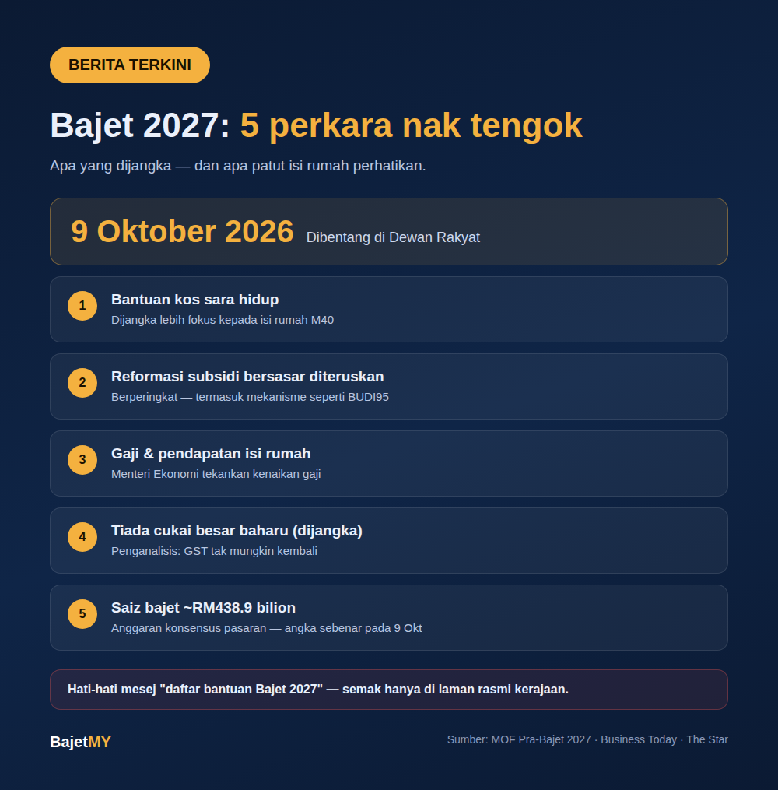

Bajet 2027 akan dibentang di Dewan Rakyat pada 9 Oktober 2026. Kementerian Kewangan (MOF) menyatakan bajet kali ini akan berteraskan pertumbuhan yang "mampan, inklusif dan berpaksikan rakyat" di bawah kerangka Ekonomi MADANI.
Sebelum bajet dibentang, ini perkara yang dijangka — dan yang patut korang perhatikan bila bajet diumumkan nanti.

1. Bantuan kos sara hidup, terutamanya untuk M40
Penganalisis menjangkakan Bajet 2027 akan mengutamakan bantuan kos sara hidup, dengan perhatian lebih kepada isi rumah berpendapatan sederhana. Kumpulan pengguna juga menggesa bajet ini menangani kos sara hidup yang terus meningkat.
Apa nak tengok: siapa layak — berdasarkan pendapatan isi rumah (B40/M40) atau kriteria lain — dan berapa nilainya.
2. Reformasi subsidi bersasar diteruskan
MOF menyenaraikan kesinambungan reformasi subsidi "secara berperingkat dan bersasar" sebagai salah satu keutamaan. Ini termasuk mekanisme seperti BUDI95 untuk petrol RON95.
Apa nak tengok: sama ada ada subsidi baharu yang disasarkan, dan bagaimana kelayakan ditentukan.
3. Gaji dan pendapatan isi rumah
Menteri Ekonomi menekankan bahawa bajet perlu fokus kepada kenaikan gaji dan jurang pendapatan. MOF turut menyenaraikan peningkatan pendapatan isi rumah dan mobiliti sosial sebagai keutamaan.
Apa nak tengok: langkah berkaitan gaji minimum, gaji penjawat awam, atau insentif majikan.
4. Tiada cukai besar baharu (dijangka)
Beberapa penganalisis menjangkakan GST tidak akan diperkenalkan semula, dan tiada langkah cukai besar baharu kerana kerajaan mahu kekal berdisiplin fiskal tanpa membebankan rakyat.
Apa nak tengok: perubahan pelepasan cukai pendapatan individu — ini yang paling terus memberi kesan kepada poket.
5. Saiz perbelanjaan keseluruhan
Anggaran konsensus pasaran meletakkan jumlah perbelanjaan Bajet 2027 sekitar RM438.9 bilion (kira-kira RM353.1 bilion mengurus dan RM85.8 bilion pembangunan). Angka sebenar hanya diketahui semasa pembentangan.
Apa korang boleh buat sekarang
- Tahu kumpulan pendapatan isi rumah sendiri — banyak bantuan menggunakan B40/M40 sebagai syarat. Semak dengan kalkulator Kumpulan Pendapatan Bajet MY.
- Jangan buat keputusan kewangan besar berdasarkan khabar angin — tunggu pengumuman rasmi.
- Hati-hati dengan mesej "daftar bantuan Bajet 2027" — penipu sering guna musim bajet untuk hantar pautan palsu. Semak hanya melalui laman rasmi kerajaan.
Kami akan kongsi ringkasan apa yang diumumkan untuk isi rumah selepas 9 Oktober.
Sumber
- Kementerian Kewangan Malaysia — Kenyataan Pra-Bajet 2027
- Business Today — Budget 2027 Preview (22 September 2026)
- The Star — Budget 2027 expected to nudge equities higher (23 September 2026)